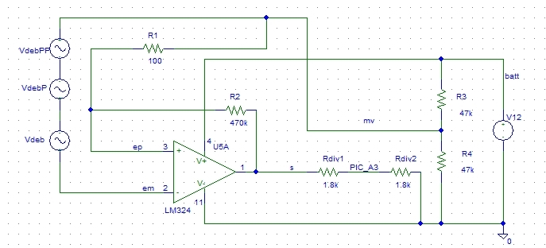
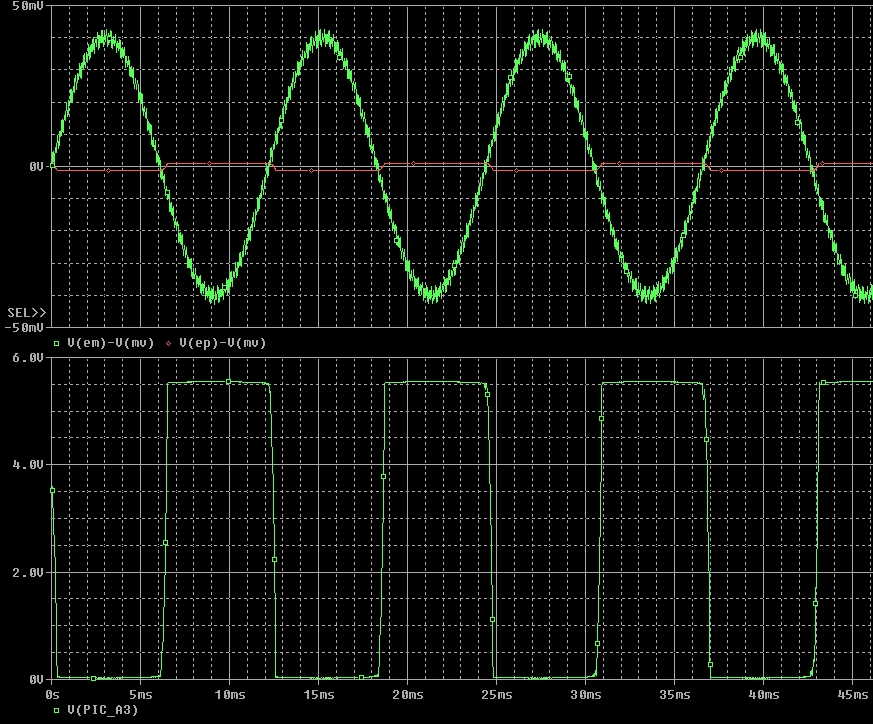

Débitmètre
Problématiques et étude du capteur
Une étape de la préparation du lancement de la fusée consiste à automatiser le remplissage de la bouteille en eau. Le volume d’eau à insérer peut-être :
- Un choix prédéfini du programme du PIC
- Renseigné arbitrairement par l’utilisateur via le « keypad » au microcontrôleur
Lors du remplissage, le débit d’eau est mesuré par un débitmètre. Ce débitmètre émet des impulsions aux caractéristiques suivantes :
| Amplitude | De l'ordre de 50 mV (mais très variable selon l'intensité du flux) |
| Fréquence d'oscillation | ~ 10 000 impulsions/L (mais peut varier avec le débit !) |
| Forme | Sinusoïdale |
Le PIC doit comptabiliser ces impulsions, pour en déduire le volume d’eau inséré. Par exemple, pour 0.3 L d’eau, il faut qu’un total de 3000 impulsions ait été compté. Cependant plusieurs problèmes (liés aux caractéristiques du débitmètre) se posent :
-
La fréquence des impulsions est fonction du débit Q : elle n’est à peu près constante que pour un certain intervalle de Q. Au-delà (ou en deçà) de cet intervalle, le débitmètre n’émettra plus exactement 10 000 impulsions par litre. Or, il est indispensable que le nombre d’impulsions du débitmètre par litre d’eau soit constant au cours du remplissage pour que le PIC puisse déterminer le volume inséré.
En effet, voici un graphe tiré de la documentation associée au débitmètre représentant le nombre d'impulsions émises par litre, en fonction du débit (voir courbe supérieure) :
On en déduit que le débit Q de remplissage en eau de la bouteille doit donc appartenir à l’intervalle (délimité en vert sur le graphe) .
Dans cette plage, l'erreur est admissible au vu de la précision requise. - Le signal fourni par le débitmètre est trop faible pour être transmis directement au PIC et sa forme est inadaptée (sinusoïdale). De plus ce signal est « parasité » d’après nos observations sur oscilloscope. Il est donc nécessaire d’amplifier ce signal en tenant compte de sa piètre qualité.
Solution technique
Pour transmettre au microcontrôleur un signal numérique (tout ou rien) à partir du signal analogique (sinusoïdal), nous avons opté pour un AOP alimenté symétriquement en +6V/-6V en comparateur.
Nous avons abouti au montage suivant :

(Fichier PSPICE schematics : remplissage_air_eau/pspice/schema.sch)
Le signal d'entrée du débitmètre est la somme des signaux sinusoïdaux Vdeb. (Nous avons fait une somme de signaux pour tenir compte de l'imperfection du signal).
La sortie liée à l'entrée A3 du PIC se situe entre les bornes des résistances Rdiv1 et Rdiv2.
L'alimentation symétrique est nécessaire pour que les seuils de basculement de notre comparateur à hystérésis soient eux aussi symétriques. S'ils ne le sont pas, le signal de sortie voit ses temps de niveau haut et bas déséquilibrés ce qui peut devenir problématique avec des signaux d'amplitude faible.
Pour réaliser cette alimentation symétrique, nous avons mis en place un pont diviseur de tension (résistances R3 et R4), et une masse virtuelle ("mv" sur le schéma). La tension de sortie de l'AOP est donc idéalement comprise entre -6V et +6V par rapport à cette masse virtuelle, et entre 0 et +12V par rapport à la masse du microcontrôleur (liée à la borne "-" de l'alimentation +12V).
Le signal de sortie est donc trop grand pour être transmis au PIC directement : la tension est redivisée grâce aux résistances Rdiv1 et Rdiv2.
Simulation informatique
Nous avons effectué la simulation de ce montage grâce au logiciel PSPICE. Le fonctionnement est bien celui attendu. Le signal de sortie est tout à fait exploitable par le PIC qui peut comptabiliser les impulsions sans problème.

Sur le graphe supérieur, le signal d'entrée est représenté en vert. Le seuil de basculement est lui représenté en rouge (proche de 0V). Sur le graphe inférieur est représenté le signal de sortie qui est transmis à l'entrée A3 du PIC, en vert.
Montage - test
Nous avons réalisé le câblage du montage schématisé ci-dessus, puis relevé les valeurs de sortie et d'entrée à l'aide d'un oscilloscope (par rapport à la masse virtuelle). Voici les signaux obtenus :